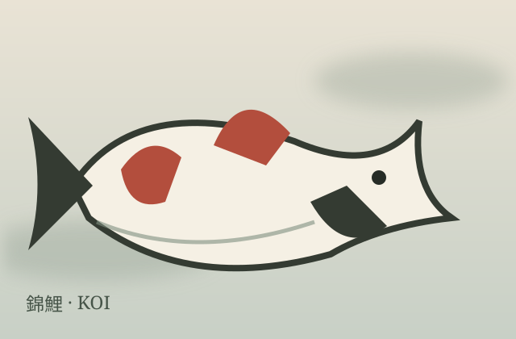
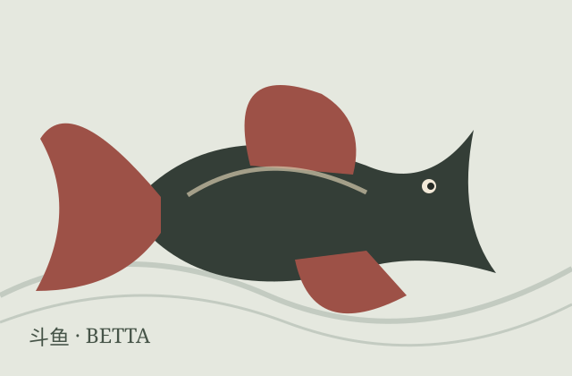
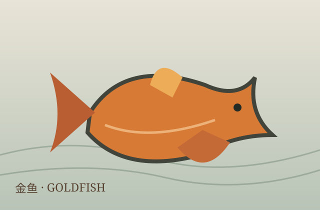
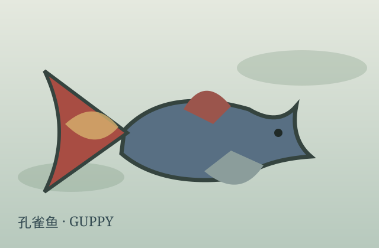
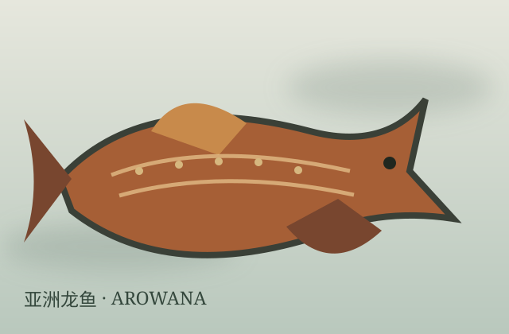
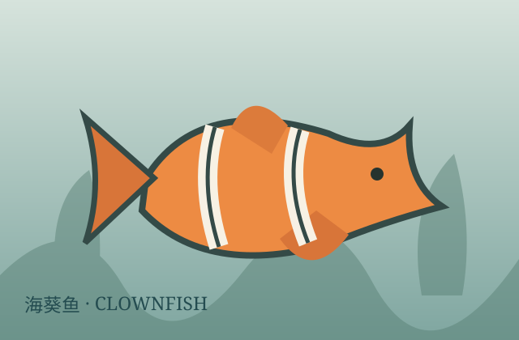

001 · FRESHWATER / DOMESTICATED
锦鲤 Cyprinus carpio
锦鲤是鲤鱼的观赏选育品系。其野生祖先广泛分布于欧亚大陆，现代锦鲤文化与日本的人工选育传统密切相关。
- 水域
- 淡水 · 池塘
- 照护重点
- 充足水体、强过滤与稳定溶氧
- 生态提醒
- 不可放生至自然水域
THE AQUATIC CODEX · VOLUME II
从淡水溪流到珊瑚海境，认识观赏鱼的原生环境、饲养需求与生态责任。

001 · FRESHWATER / DOMESTICATED
锦鲤是鲤鱼的观赏选育品系。其野生祖先广泛分布于欧亚大陆，现代锦鲤文化与日本的人工选育传统密切相关。

002 · FRESHWATER
原生于东南亚湄公河流域周边的浅水环境。其迷宫器官可辅助呼吸空气，但不能替代清洁、稳定的水质。

003 · FRESHWATER / DOMESTICATED
金鱼由中国的鲫属鱼类长期人工选育而来。不同体型与品系的游泳能力、视野和照护要求并不相同。

004 · FRESHWATER
原生分布于南美洲北部及邻近地区，现因人为引入而出现在许多热带地区。属于繁殖力较强的胎生鳉科鱼类。

005 · FRESHWATER / CONSERVATION
原生于东南亚部分淡水流域。该物种受到国际贸易与保育法规关注，来源证明及合法性必须优先确认。

006 · MARINE
分布于印度洋—太平洋部分珊瑚礁海域，与海葵存在互利关系。海水系统需要成熟循环与稳定盐度。